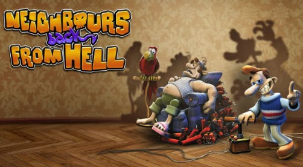

Neighbours from Hell (ازاي تخنق جارك)

- Developer(s):JoWooD .
- Publisher(s):EU: JoWooD Productions, NA: Encore Software, WW: THQ Nordic.
- Designer(s): Michael Paeck, Gerhard E. Kodys.
- Platform(s):Windows, Android, iOS, macOS, PlayStation4, Xbox One .
- Release:For Windows: June 20, 2003.
- Mode(s): Single-player.
In Neighbours from Hell, the player take control of Woody, an average man who seeks revenge on his neighbour
Mr.
Rottweiler by performing tricks on him, all of which is secretly caught on camera for a reality TV show of
the same
name. In each level, the aim is to complete a set amount of pranks on Rottweiler, whilst keep out of sight
of him; if
Rottweiler spots and catches Woody, the level ends in failure and the player must restart it. The game
itself sees
players moving between various rooms in the house, such as the kitchen and hallway, via their doors, with
levels grouped
into "seasons"; as the player progresses to new seasons, the player gains access to more rooms with more
challenging
prank puzzles to complete.